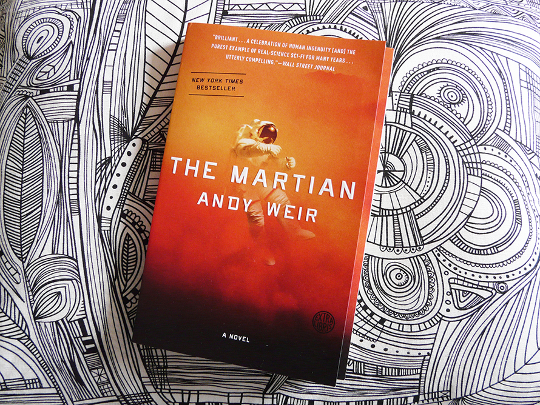
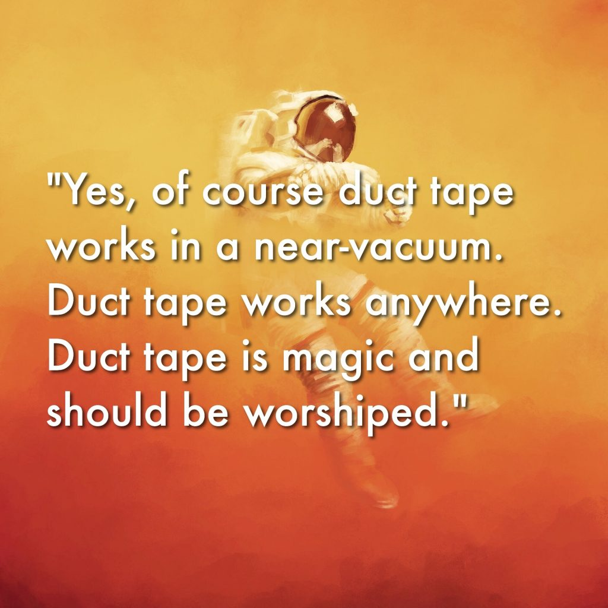

After the Ares 3 mission to Mars goes all sorts of wrong, its crew is forced to abandon their post and leave behind botanist Mark Watney (who they believe to be deadóthis crew isn't evil). But Mark is very much alive. Sidenote: he's also very much awesome...we're talking about a guy who manages to keep his sense of humor the entire time HE'S STUCK ON MARS BY HIMSELF. Here's the thing: being dead would have been easier than the pickle Mark finds himself in. The poor guy is forced to reckon with the knowledge that he's stuck on Mars. Alone. And being stuck on Mars ain't like being stuck overnight at the airportóMark has to contend with some Big Deal realities. The first thing he does is...calculate. Good thing he paid attention in Chemistry and Physics, eh? He realizes he only has a finite amount of food and air, and a seemingly infinite amount of time before any of his NASA buddies come and collect him. (Brain snack: Think it's weird that Mark is worried about food and not, say, a giant asteroid hitting him? Well, Andy Weir wanted to be sure that every issue Mark faced was "the most likely problem that he would have" (source). The realistic nature of the whole thing makes us pretty sure early on that our boy isn't gonna stumble upon the big, red "BACK TO EARTH" button and make it back just like that.)
So, once more for emphasis: Mark's trapped on Mars and needs to figure out how to get oxygen, food, and water... and his only entertainment is a bunch of 1970s TV, disco music, and books selected by other people. Oh, and one other thing: the antenna on the communication device is broken. Mark has no way to communicate with the outside world. And remember, nobody even knows that he's alive...at first. Eventually, NASA figures out that Mark is alive and kicking (and getting his science on in a very big way), and they start monitoring his every move. They watch as he locates Pathfinder, a Mars rover from the '90s that he can use to communicate with NASA. But even though Mark's back on speaking terms with his NASA buds, the reality is bleak. Bleak fact #1: it will take a whopping four years for a new Mars mission to come and rescue him. Bleak fact #2: Mark has to grow his own food if he wants to keep on keepin' on... and he has to grow that food on Mars, one of the most inhospitable environments ever.


But Mark wasn't just selected to go to Mars because he has an Amy Schumer-caliber sense of humor and the tenacious survival instinct of Tom Hanks in Castaway. He's also a kick-butt botanist who proceeds to grow the first spuds on Mars. Makes you want to look into botany as a career, huh? Now that astronaut's off the list, of course. It looks like Mark is going to be able to hold out for a while: his biggest problems for a few months are loneliness and eating way too many baked potatoes. But Mars operates by Murphy's Law, and Mark has to contend with a torn canvas in his home, a ruined crop of taters, a cracked helmet, a thrown-out back, and more explosions than we care to count. (Remember what we said about the realistic problems? Yeah, they keep comin'.) Luckily, Mark's got more tricks up his spacesuit sleeve than MacGyver... and a seemingly endless supply of duct tape. (Best invention ever.) When things start to look especially bleakity-bleak-bleak, NASA tries to send Mark supplies... but thanks to a rush job, a defective bolt, and some weirdly liquefying energy bars (yep), the supply vessel explodes. There is one idea that could work, thoughóthe Purnell Maneuver. This plan requires Mark's Ares 3 crewmates to return to Mars on a rescue mission... which NASA boss Teddy Sanders is resistant to green-lighting. In the end, a scientist named Mitch Henderson sends the plan to the Ares 3 crew behind Teddy's back, and the crew heads back to the red planet.
Although things have been going from bad to worse back on Marsómostly due to an electronics failure that cuts off his communication with NASAóMark prepares for the final leg of his journey. He needs to drive several thousand kilometers to the Ares 4 site, where he'll use a jury-rigged ship to launch himself into space and the open arms of his crewmates. What could go wrong? Um, everything short of death. Mark gets lost, he drives straight into a Mars dust storm, he flips his rover, he has to strip down his launch vehicle, and he's almost thrown (unconscious) out into the bowels of space. But because this is Mark freakin' Watney we're dealing with, he confronts each problem head on with brains, courage, witty quips, fist-pumps, andóyou got itóseveral hundred meters of duct tape. And he ultimately gets aboard the Hermes safe and sound. After two years of loneliness, he gets to hang out with his astronaut buddies yet again. He's all in one piece and headed for Earth... but he probably lost his desire for potatoes long ago.

Weir began writing science fiction in his twenties and published work on his website for years. He also authored a humour web comic called Casey and Andy[NB 1] featuring fictionalized "mad scientist" versions of himself and his friends (such as writer Jennifer Brozek) from 2001 to 2008; he also briefly worked on another comic called Cheshire Crossing bridging Alice in Wonderland, Peter Pan and The Wizard of Oz. The attention these gained him has been attributed as later helping launch his writing career, following the failure to publish his first novel attempt called Theft of Pride. His first work to gain significant attention was "The Egg", a short story that has been adapted into a number of YouTube videos, a one-act play, and is the overarching concept of Everybody, the third album by American rapper Logic.